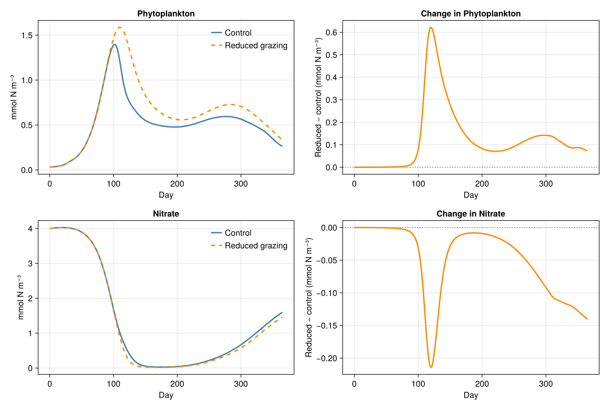
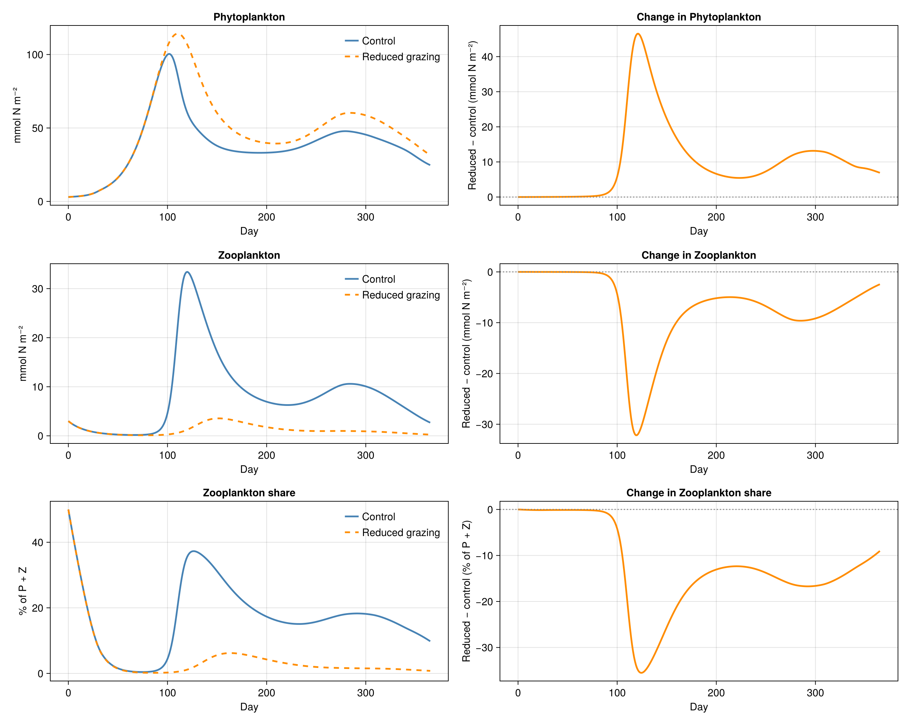
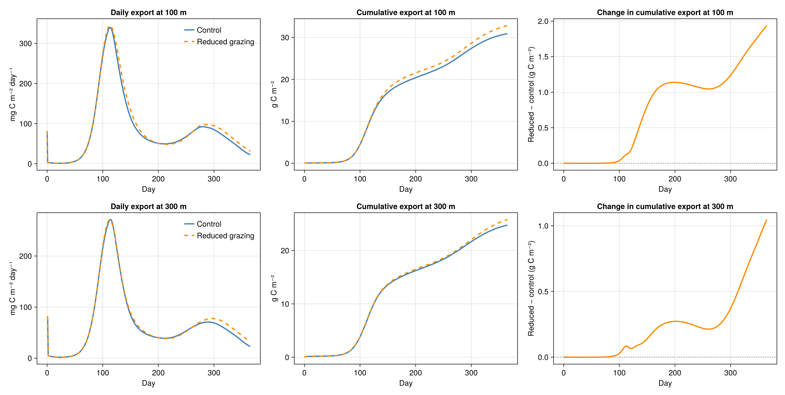

Experiment: change the grazing rate
Start with the reference column. Now change one biological parameter: zooplankton grazing. We run two otherwise identical columns and compare phytoplankton, nitrate and carbon export.
From the repository root:
julia --project=oceanbiome oceanbiome/exercises/01_grazing.jlAdd --quick for a two-day test, or --quick --plot to test plotting. The full experiment runs for 365 days.
Load the packages and prepared physical forcing
using OceanBioME, Oceananigans
using Oceananigans.Units
using Oceananigans.TurbulenceClosures: VerticallyImplicitTimeDiscretization
using MASTSWorkshop: surface_PAR, vertical_diffusivity, initial_conditions,
sinking_courant, diagnose_column, write_diagnostics, write_export_profile,
plot_grazing_response, plot_plankton_balance, plot_carbon_exportConfigure the water column
The physical environment is an idealised BATS-like seasonal cycle. Both grazing treatments use the same 500 m column, 50 cells (10 m spacing), 30-minute step, physical forcing and initial concentrations.
grid = RectilinearGrid(size = 50, extent = 500meters,
topology = (Flat, Flat, Bounded))
time_step = 30minutes
initial = initial_conditions()
output_dir = get(ENV, "MASTS_OUTPUT_DIR",
joinpath(@__DIR__, "..", "..", "outputs", "oceanbiome"))
mkpath(output_dir)
quick = "--quick" in ARGS
make_plots = !quick || "--plot" in ARGS
results = Dict{String, Any}()Run the control and reduced-grazing experiments
Here PhytoZoo, LOBSTER, NonhydrostaticModel, set!, Simulation and run! use the package interfaces directly. Only the grazing rate differs: 0.8/day in the control and 0.4/day in the experiment (in s⁻¹). The model writes depth profiles and diagnoses export and nitrogen budgets.
for (label, grazing_rate) in (("control", 0.8 / day),
("reduced_grazing", 0.4 / day))
plankton = PhytoZoo(; nutrient_half_saturations = (nitrate = 0.7, ammonia = 0.001),
maximum_grazing_rate = grazing_rate)
biogeochemistry = LOBSTER(grid; plankton, surface_PAR, scale_negatives = true)
model = NonhydrostaticModel(grid;
closure = ScalarDiffusivity(VerticallyImplicitTimeDiscretization();
ν = vertical_diffusivity,
κ = vertical_diffusivity),
biogeochemistry)
set!(model; initial...)
sinking_cfl = sinking_courant(model, time_step)
isfinite(sinking_cfl) && sinking_cfl < 1 ||
error("Particle sinking CFL $sinking_cfl requires a shorter time step")
simulation = Simulation(model; Δt = time_step, stop_time = quick ? 2days : 365days)
filename = joinpath(output_dir, "$(label).jld2")
simulation.output_writers[:profiles] = JLD2Writer(model, model.tracers;
filename,
schedule = TimeInterval(quick ? 6hours : 1day),
overwrite_files = true)
run!(simulation)
d = diagnose_column(filename, model)
results[label] = d
write_diagnostics(joinpath(output_dir, "$(label)_diagnostics.csv"), d)
write_export_profile(joinpath(output_dir, "$(label)_export_profile.csv"), d)
println("$(label): final surface phytoplankton = ", last(d.surface_P), " mmol N/m³")
println("$(label): cumulative export at 100 m = ", last(d.export_100.cumulative_g_C), " g C/m²")
println("$(label): cumulative export at 300 m = ", last(d.export_300.cumulative_g_C), " g C/m²")
println("$(label): nitrogen budget residual = ", last(d.budget_residual),
" mmol N/m² (", 100 * last(d.budget_residual) / first(d.nitrogen_inventory),
"% of sampled starting inventory)")
println("Saved $filename and diagnostics CSV")
endInspect the simulation output
Compare the annual results of the two grazing configurations. 365-day simulation — console output
control: final surface phytoplankton = 0.26273882389068604 mmol N/m³
control: cumulative export at 100 m = 30.8756299566044 g C/m²
control: cumulative export at 300 m = 24.753002636513145 g C/m²
control: nitrogen budget residual = -0.011793795718403999 mmol N/m² (-0.0005690613135018503% of sampled starting inventory)
Saved /home/runner/work/masts-asm-2026-modelling/masts-asm-2026-modelling/outputs/oceanbiome/reference_docs/grazing/control.jld2 and diagnostics CSV
reduced_grazing: final surface phytoplankton = 0.33590060472488403 mmol N/m³
reduced_grazing: cumulative export at 100 m = 32.812044856039996 g C/m²
reduced_grazing: cumulative export at 300 m = 25.80034255737117 g C/m²
reduced_grazing: nitrogen budget residual = -0.011704788407314481 mmol N/m² (-0.0005647666302150414% of sampled starting inventory)
Saved /home/runner/work/masts-asm-2026-modelling/masts-asm-2026-modelling/outputs/oceanbiome/reference_docs/grazing/reduced_grazing.jld2 and diagnostics CSVDiagnose the grazing response
A difference panel complements each comparison. It reveals the change due to reduced grazing even when the two trajectories nearly overlap.
if make_plots
@eval using CairoMakie # Activates the MASTSWorkshop plotting extension.
filename = joinpath(output_dir, "grazing_response.png")
plot_grazing_response(results["control"], results["reduced_grazing"], filename)
println("Saved $filename")
end
Compare phytoplankton and zooplankton
The upper-100 m phytoplankton and zooplankton nitrogen inventories show how changing grazing redistributes living biomass. The zooplankton share, Z / (P + Z), is a bounded alternative to a potentially very large Z:P ratio. Compare both experiments and their differences through the annual cycle.
if make_plots
filename = joinpath(output_dir, "grazing_plankton_balance.png")
plot_plankton_balance(results["control"], results["reduced_grazing"], filename)
println("Saved $filename")
end
Plot particulate carbon export
Instantaneous and cumulative fluxes are shown at 100 m and 300 m, with separate difference panels. Both depths can initially reflect the sinking particulate matter prescribed in the initial conditions; interpret later changes alongside the developing phytoplankton and nutrient distributions.
if make_plots
filename = joinpath(output_dir, "carbon_export.png")
plot_carbon_export(results["control"], results["reduced_grazing"], filename)
println("Saved $filename")
end
Interpret the results
Compare the phytoplankton and zooplankton inventories and their ratio. Does reduced grazing change the share of zooplankton in living biomass? Compare the phytoplankton response with export at each depth. Does a change in surface biomass produce a proportional change in carbon export? How does the cumulative flux differ from the instantaneous flux?
The particle fluxes use a fixed molar C:N ratio of 106:16. Each day's export is calculated from the two sinking particulate pools; the nitrogen budget includes all seven LOBSTER tracers. The budget closes against sinking loss through the open bottom boundary.
Nitrogen-budget check
The budget compares the seven-tracer nitrogen inventory with sinking loss through the open bottom boundary. The residual is relative to the first saved inventory.
| Experiment | Final residual | Maximum absolute residual |
|---|---|---|
| Control | -0.0% | 0.0% |
| Reduced grazing | -0.0% | 0.0% |
The acceptance threshold is 5% of the starting inventory. The diagnostic uses saved profiles and an upwind estimate of sinking flux.